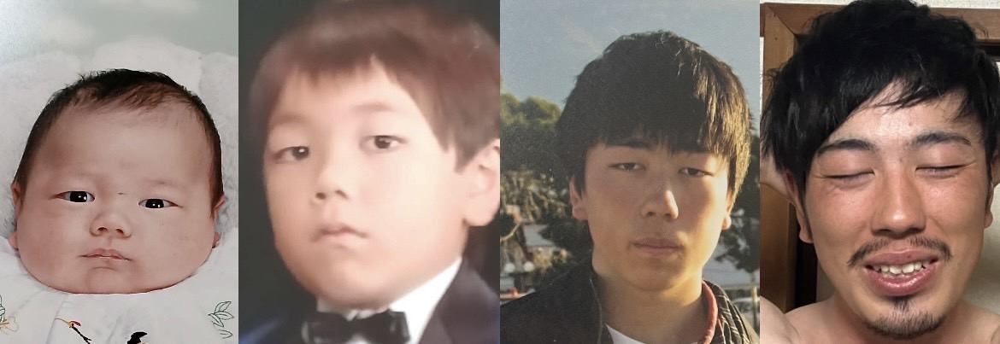
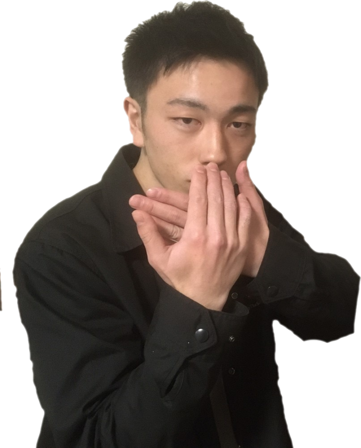
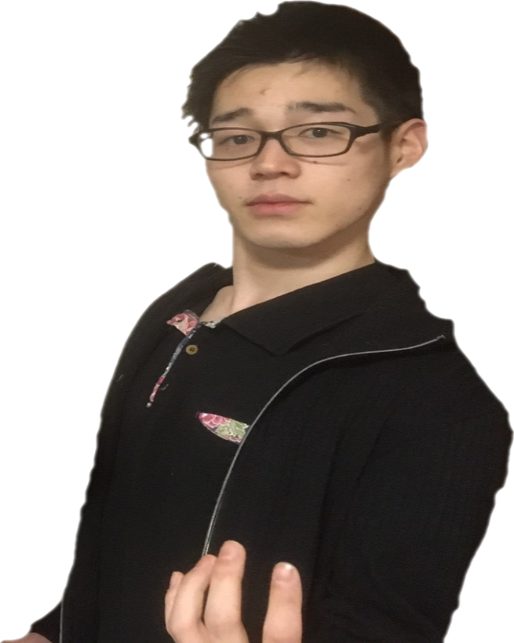
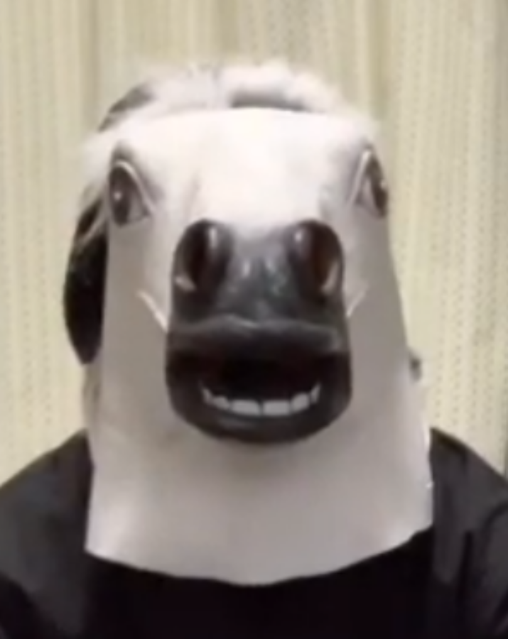

Member
-

キモヒゲ
メインの活動者．
いっぱいキモイことをする．
2023年からオニロック民営放送改め，キモヒゲとして活動を始める．
本人はキモヒゲという名前を気に入っていないと言い張るが
ロゴを自作したり，結構乗り気である． -

キモスタッフ
2023年から裏方へ転向．
たまに動画に出たり，撮影を担当する．
実はコイツが一番キモかったりする．
2023年から演技がクサいという理由で演者をクビになった．
高校の文化祭では，なかなかの演技をしていたのにどうしてこうなった． -

キモッフ
マジの裏方．
動画投稿当初から編集を手伝っている．
グリーンバックを使った動画は,コイツなしでは作れない．
キモイ2人を手伝っているのは実にキモイ．
このホームページや公式LINEを作った張本人．キモすぎ．